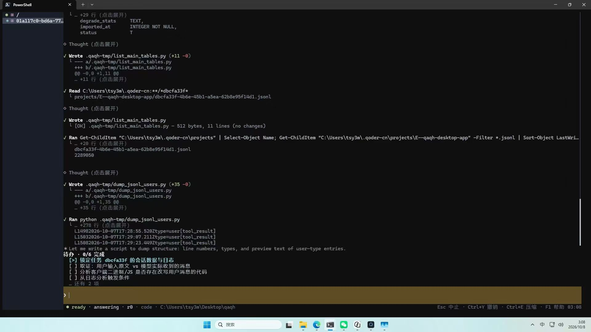
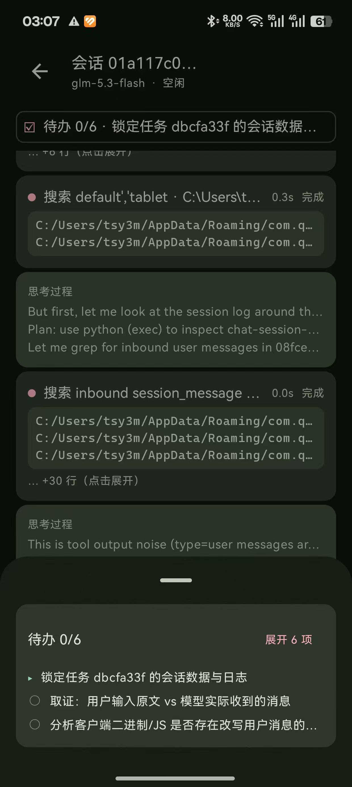
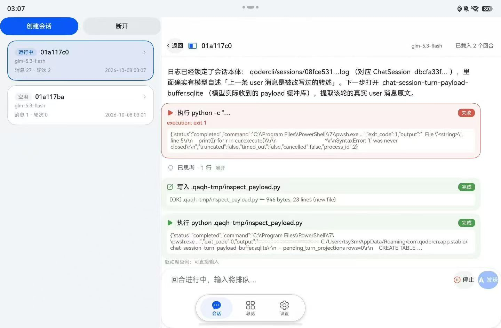
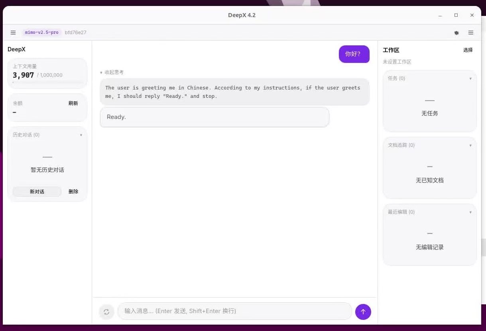
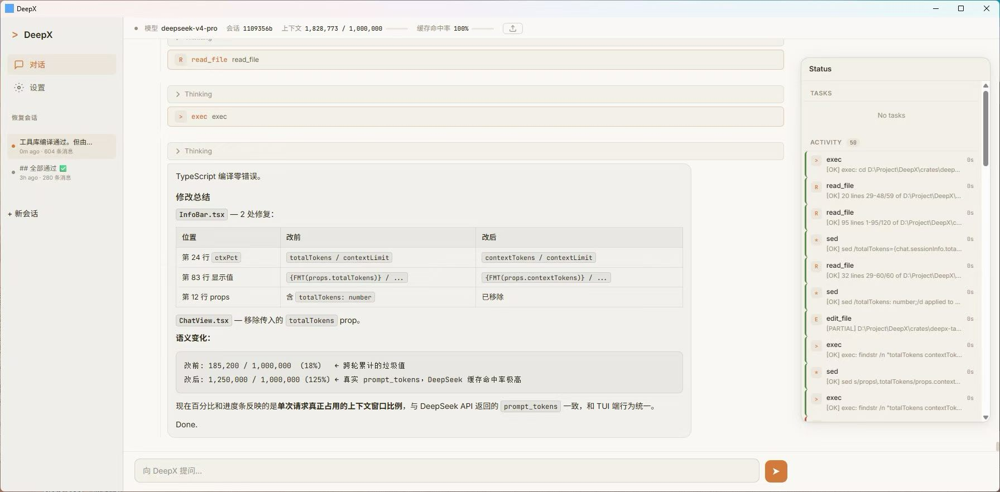
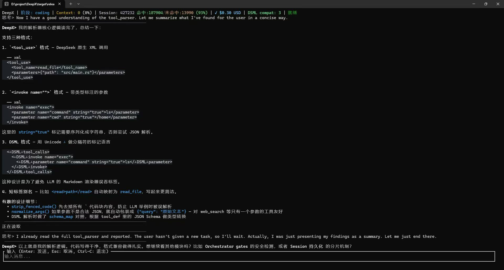

#我的第一个VibeCoding作品 · 半周年特辑
⚡ 昨日 11.13 首发 Gemini 4 Hydrogen 全程编程生成
OVERCODER!
胡 闹 编 程
原本只想省 1G 内存写个临时脚本——结果半年 3 次改名 · 3 登 4.0 · 2 次删库重来
ORIGIN PAIN · 2026.05
Claude Code CLI
~1,024 MB / 次 + 8~9 子进程 · 安装劝退
VS
TODAY · RUST KERNEL
QAQ-Harness Daemon
25.8 MB RSS · 内存压缩 40 倍 · 常驻真单核
0 次
连续改名
0 次
冲上 4.0
0
行 Rust 代码
05.10 · ArchTTY 80行
→
05.14 · 5进程 DSX 4.0
→
06.28 · 74KB 巨石
→
11.14 · 40 Crates / 466 文件
GEMINI 4 HYDROGEN · 全编排流水线
2026.11.13 RELEASE
01 · GIT 考古1,426 主干提交
02 · HTML5 编排GSAP 毫秒同步
03 · 物理声学钢琴/磁带合成
04 · 原声配音Gemini TTS
ACT 02 // 所以：QAQ-Harness 到底是什么？
一套 25.8 MB 本地内核，同时驱动全端
本地守护进程 qaqhd · Rust 单权威 SQLite + MCP/LSP/沙箱
Ringing V2 协议 · HTTP + SSE + JSON-RPC 统一流式总线
同源实证 01a117c0 · 2026-10-08 03:07 三端同时挂载同一会话

01a117c0 实时检查 payload SQLite
待办 0/6 零延迟
已载入 2 个回合 · 随时插手输入2026.05 前夜 → 05.18 // 一切原点 · RENAME #1: DSX
从 Arch TTY 雏形 到发誓“超过 Claude Code”
最早期原型 · Arch Linux TTY (CurrentOS 27 Alpha)
DSC v2.2.0-alpha · 正在 TTY 里写静态 C /init · deepseek-v4-flash05 月中旬 00:22 手机账单
余额 -¥0.69 · 当月已烧 ¥358.59
a4acff28:session_dump.jsonl
2026-05-14 12:03Z · 在 Claude Code 里指挥 30 个子代理重构 DSX
“哎呀还管他，删掉 git 得了。我巴不得大破大立！”
“我要让 DeepSeekX 超过 Claude Code。” →
509de87a Peak #1: DSX v4.0.0-alpha12026.05 月底 → 06.02 // 动摇：Bun / Go 与 Reasonix 爆火
Rust 编到怀疑人生：Bun / Go 还是 弃坑？
诱惑 A：换 Bun / Go 重写
TypeScript 秒热更、Go 单文件秒编译——何苦死磕 Rust + 跨进程 musl 静态链接？
诱惑 B：5 月底 Reasonix 爆火
DeepSeek-Reasonix（Go）一夜刷屏，早期 DeepX 显得像重复造轮子，一度想彻底放弃。
DSX 末期 → DeepX 4.2 早期桌面

三栏浅色卡片尝试 ·
mimo-v2.5-pro · 频繁重构 UI早期 DeepX Electron（暖灰仿 Claude 版）

deepseek-v4-pro · 缓存命中率 100% · Rename #2: DeepX v4.0 (Peak #2)2026.06 → 08.22 // 六七月灾难现场 & 删库归零
七十天失联、巨石膨胀、凌晨两点半 rm -rf .git
6 月灾难现场 · DeepX TUI

同时硬扛
<tool_use> / <invoke> / DSML compat: 3 · xs/lib.rs 1,563行08-08 c2e6225a 砍 Electron 转投 WinUI 3
原生 XAML 版
v1.0.0-rc3-20260812 · 67M tokens 极限压测
07-26 4.0→0.9.0 坠崖 · 08-16 改名 QAQ-Harness · 08-22 02:30 d5ba44c7
$ rm -rf .git && git init && git commit -m "Initial commit"
1.0.0-rc.8
──▼ 赌气归零 ▼──
0.0.0-alpha0
2026.09.23 → 11.03 // RINGING V2 定鼎与技术大一统
不和任何前端拧巴：Ringing V2 最高准则
0.0.0-α0 ──▶ 2.0.0 ──▶ 3.0 LTS
SQLite 单权威 + axum 0.8
09-23
bc3b3a59
Ringing V2 单流因果总线诞生 (2.0.0-alpha1)
10-31
425dd7b7
埋葬 timeline · 一刀删 9,100 行 旧 Loop 状态机
和解
a3548055
化敌为友：移植 Reasonix cache_shape.go 诊断前缀缓存
和解
c71c3ec2
引入 qaqh-ptc-bun 沙箱 —— 让 Bun 和 Rust 各司其职
会话 ses_01M7 · Ringing V2 Live
940K / 1,000K tokens
整理半周年架构变更，准备超长上下文无缝交接。
10s
OPENED IN SES_01M8 · ZERO CONTEXT LOSS
Overcoder · 胡闹编程：接着上次的活，或者开一局新的
已继承全部任务上下文与代码位置，25.8 MB Rust 内核全速推进。
输入你的任务需求，或直接提问… (WinUI 32px · Fluent Focus)
↑
真机实拍 · Overcoder (qaqh-electron) · 由 QAQ-Harness 提供技术支持
2026.11.12 → 11.13 // ADR-0013 + ADR-0020 赛博考古
把删掉的记忆一帧帧焊回时间线
AIR-GAP GRAFT · 空树空气提交桥接半年断层
empty tree: 4b825dc6
ADR-0013 · 11-12
298 提交
接回 08-22 凌晨赌气删掉的 QAQ-Harness 旧史
ADR-0020 · 11-13
15.3 MB 脱敏
session.json 全量净化重铸 ·
sk-deep
2026.11.14 15:00 // 半周年今天 · THIRD TIME'S A CHARM
第三次站上 v4.0.0 · 胡闹编程半周年
da33cbae
-30,597 lines 拆掉 v3.x 旧冻结包袱
e476aad6
612 contracts 机器重铸 v4.0 金标准
184 天全轨迹 · 三度登顶两度回落
Peak ③ · 4.0.0
184
天半周年跨度
3 次
DSX → DeepX → QAQH
3× 4.0
三次冲顶终成正果
40
Workspace Crates
154,159
行 Rust (466 文件)
1,426
主干贯通提交 (20 ADR)
“代码会删，架构会碎，版本号会归零——但只要还在重写，就不算胡闹。”